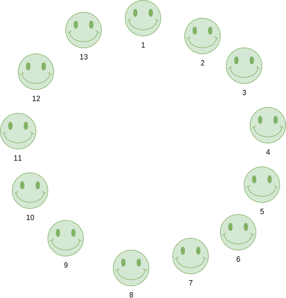
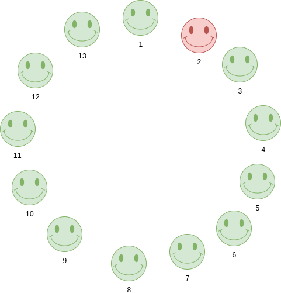
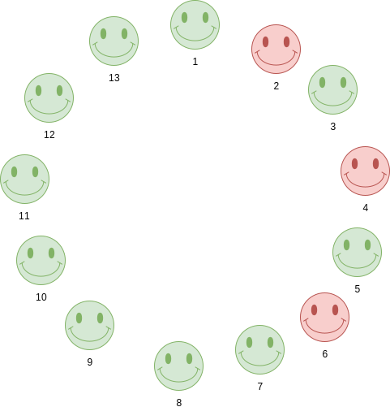
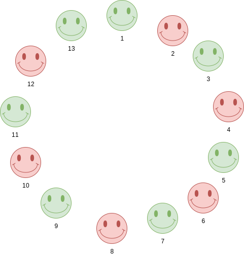
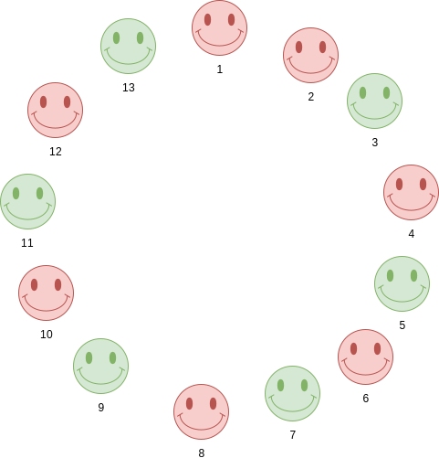
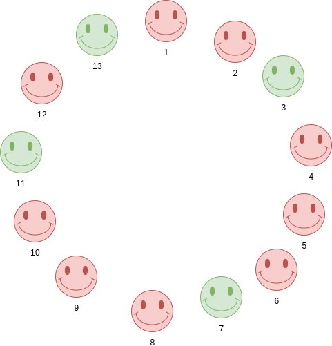
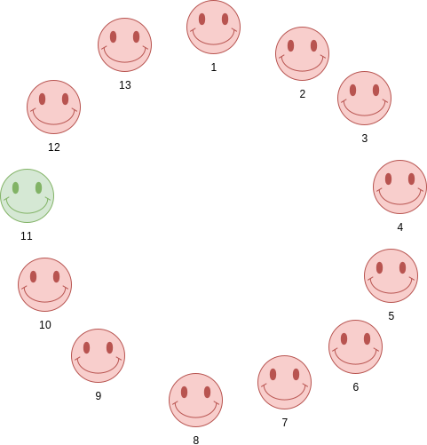

class: center, middle, inverse # Python Knots ## Martin Schweitzer --- class: center, middle, inverse # Python (K)nots ## Martin Schweitzer --- # Programming Sites ### Projecteuler.net -- ### Rosalind.info -- ### www.codewars.com -- ### Hackerrank.com -- ### https://codegolf.stackexchange.com/ -- ### Leetcode.com -- ### Exercism.io --- # Why competitions are fun -- ## Can forget about PEP-8 -- ## Don't worry about others maintaining your code -- ## Don't worry about sanitising input -- ## See other people's solutions --- # Example: CodeSignal ``` Here's today's challenge: You've been chosen as a contestant on a popular TV game show where you bid on the price of a fancy item. You're the last one to go, so you know all the other contestants' bids, and you also have an idea of what the maximum possible price could be. Given this information, your task is to find the lowest bid that would maximize your chance of winning! ``` --- # Example: Project Euler Let us call a positive integer `\(k\)` a _square-pivot_, if there is a pair of integers `\(m > 0\)` and `\(n ≥ k\)` such that the sum of the `\((m+1)\)` consecutive squares up to `\(k\)` equals the sum of the `\(m\)` consecutive squares from `\(n+1\)` on: `\((k-m)^2 + ... + k^2 = (n+1)^2 + ... + (n+m)^2\)`. Some small square-pivots are 4: 3^2 + 4^2 = 5^2 21: 20^2 + 21^2 = 29^2 24: 21^2 + 22^2 + 23^2 + 24^2 = 25^2 + 26^2 + 27^2 110: 108^2 + 109^2 + 110^2 = 133^2 + 134^2 Find the sum of all distinct _square-pivots_ ≤ 10^10. --- # Warm-up ## Interesting numbers Return true if a number consists of only repeating digits... -- ```python def is_single(n): return len(set(str(n))) == 1 ``` --- # Warm-up ## Interesting numbers All digits in sequence (e.g. 9876 or 7890) -- ```python def is_sequence(n): return n in ('1234567890 9876543210') ``` --- # Perfect numbers ### E.g. 6 = 1 + 2 + 3 -- ### 6, 28, 496, 8128, 33550336, 8589869056... -- ```python def is_perfect(n): return sum(factors(n)) == n ``` -- ```python def factors(n): return [x for x in range(1, n) if n % x == 0] ``` -- ```python from functools import reduce def factors(n): return set(reduce(list.__add__, ([i, n//i] for i in range(1, int(n**0.5) + 1) if n % i == 0))) ``` --- # Perfect numbers ### E.g. 6 = 1 + 2 + 3 ### 6, 28, 496, 8128, 33550336, 8589869056... ```python def is_perfect(n): return sum((x for x in range(1, n) if n % x == 0)) == n ``` --- # Anagrams ## Determine if two words are anagrams ``` ('pots', 'spot') -> True ('pots', 'spots') - > False ``` -- ```python from collections import Counter def is_anagram(w1, w2): return Counter(w1) == Counter(w2) ``` -- ```python def is_anagram(w1, w2): return sorted(w1) == sorted(w2) ``` --- # Page numbering ### Convert [1, 3, 5, 6, 7, 9, 11, 12] ### to: "1, 3, 5-7, 9, 11, 12" -- ```python from itertools import groupby def solution(args): grps = ([v[1] for v in g] for _,g in groupby(enumerate(args), lambda p: p[1]-p[0])) return ','.join('{}{}{}'.format(g[0],'-' if len(g) > 2 else',',g[-1]) if len(g) > 1 else str(g[0]) for g in grps) ``` --- # Given a number, return the longest run of 1s in the binary representation ### e.g. 27 -> 11011 ### e.g. 199 -> 11000111 -- ```python def longest_run(n): longest = 0 current = 0 for i in bin(n)[2:]: if i == '1': current += 1 else: if current > longest: longest = current current = 0 return max(current, longest) ``` --- # Given a number, return the longest run of 1s in the binary representation ```python def longest_run(n): return max(len(s) for s in bin(n)[2:].split('0')) ``` --- # Burrows-Wheeler Transform ### BANANA ``` BANANA$ $BANANA A$BANAN NA$BANA ANA$BAN NANA$BA ANANA$B ``` --- # Burrows-Wheeler Transform ### BANANA ``` ANANA$B ANA$BAN A$BANAN BANANA$ NANA$BA NA$BANA $BANANA ``` -- ``` BNN$AAA ``` --- # Burrows-Wheeler Transform ```python string = 'BANANA' string += '$' bwt = sorted([string[i:] + string[:i] for i in range(len(string))]) bwt = "".join([s[-1] for s in bwt]) print bwt ``` --- # Suffix Array .pure-table.pure-table-bordered.pure-table-striped[ | i | 1 | 2 | 3 | 4 | 5 | 6 | 7 | | ---- | ---- | ---- | ---- | ---- | ---- | ---- | ---- | | s[i] | B | A | N | A | N | A | $ | ] -- <br> .pure-table.pure-table-bordered.pure-table-striped[ Suffix | i -------|--- BANANA$| 1 ANANA$ | 2 NANA$ | 3 ANA$ | 4 NA$ | 5 A$ | 6 $ | 7 ] --- # Suffix Arrays .pure-table.pure-table-bordered.pure-table-striped[ Suffix | i --------| --- $ | 7 A$ | 6 ANA$ | 4 ANANA$ | 2 BANANA$ | 1 NA$ | 5 NANA$ | 3 ] -- <br> .pure-table.pure-table-bordered.pure-table-striped[ i | 1 | 2 | 3 | 4 | 5 | 6 | 7 --- |---|---|---|---|---|---|--- A[i]| 7 | 6 | 4 | 2 | 1 | 5 | 3 ] --- # Suffix Arrays ```python def suffix_array(s): a = list(range(len(word))) return a.sort(key=lambda x:s[x:]) ``` --- # Code Golf https://codegolf.stackexchange.com/questions/171018/compare-version-numbers ``` version1 version2 result 2 1 > 1.0.0 1 = 1.0 1.0.0 = 1.2.42 1.2.41 > 1.1.56789 1.2.0 < 1.10 1.2 > 1.20 1.150 > 18.04 18.4 = 1.0.0.1.0 1.00.00.2 < 00.00.01 0.0.0.1 > 42.0 4.2.0 > 2018.08.1 2018.08 > ``` --- # Code Golf ## Version numbers ### Python (76 bytes) ```python lambda*l:cmp(*map(lambda v:map(int,v.split('.')+[0]*len(`l`))[:len(`l`)],l)) ``` --- # Code Golf ## Version numbers ### Perl 6 (47 Bytes) ```perl {first +*,[Z<=>] map *.split('.')[^@_.ords],@_} ``` -- ### R (32 Bytes) ```R rank(numeric_version(scan(,""))) ``` -- ### Japt (11 Bytes) ``` N®q.Ãy_r-Ãf ``` # Code Golf https://codegolf.stackexchange.com/questions/165809/alphabet-position-finder --- # Code Golf ## Challenge: Count the number of ones in the binary representation of all numbers between a range -- ## Python 2 (45 Bytes) ```python lambda x,y:`map(bin,range(x,y+1))`.count('1') ``` -- ## Japt (8 Bytes) ``` rõ x_¤¬x ``` --- # Code Golf ## Challenge: Count the number of ones in the binary representation of all numbers between a range ## Pyth (7 Bytes) ``` ssjR2}F ``` -- ## Husk (4 Bytes) ``` Σṁḋ… ``` --- # Josephus numbers ### We have n people sitting in a circle. We kill every second person. Who will be the last person standing.  --- # Josephus numbers ### We have n people sitting in a circle. We kill every second person. Who will be the last person standing.  --- # Josephus numbers ### We have n people sitting in a circle. We kill every second person. Who will be the last person standing.  --- # Josephus numbers ### We have n people sitting in a circle. We kill every second person. Who will be the last person standing.  --- # Josephus numbers ### We have n people sitting in a circle. We kill every second person. Who will be the last person standing.  --- # Josephus numbers ### We have n people sitting in a circle. We kill every second person. Who will be the last person standing.  --- # Josephus numbers ### We have n people sitting in a circle. We kill every second person. Who will be the last person standing.  --- # Josephus numbers ## Suppose we have 1234567890 people -- ```python def josephus(n): return int(bin(n)[3:] + '1', 2) ``` -- `https://www.youtube.com/watch?v=uCsD3ZGzMgE` --- class: center, middle # Thank You ### https://github.com/martinschweitzer/python_knots.git --- # Appendix - coding sites * https://www.reddit.com/r/dailyprogrammer/ * Rosalind.info * https://www.hackerrank.com/dashboard * https://codechalleng.es/ * https://www.codingame.com/start * https://open.kattis.com/ * http://codeforces.com/ * http://www.codeabbey.com/ * https://leetcode.com/ * http://exercism.io/ * https://practity.com/ * https://edabit.com/challenges * https://www.interviewcake.com/ --- Notes: https://www.hackerrank.com/challenges/beautiful-binary-string/problem ---